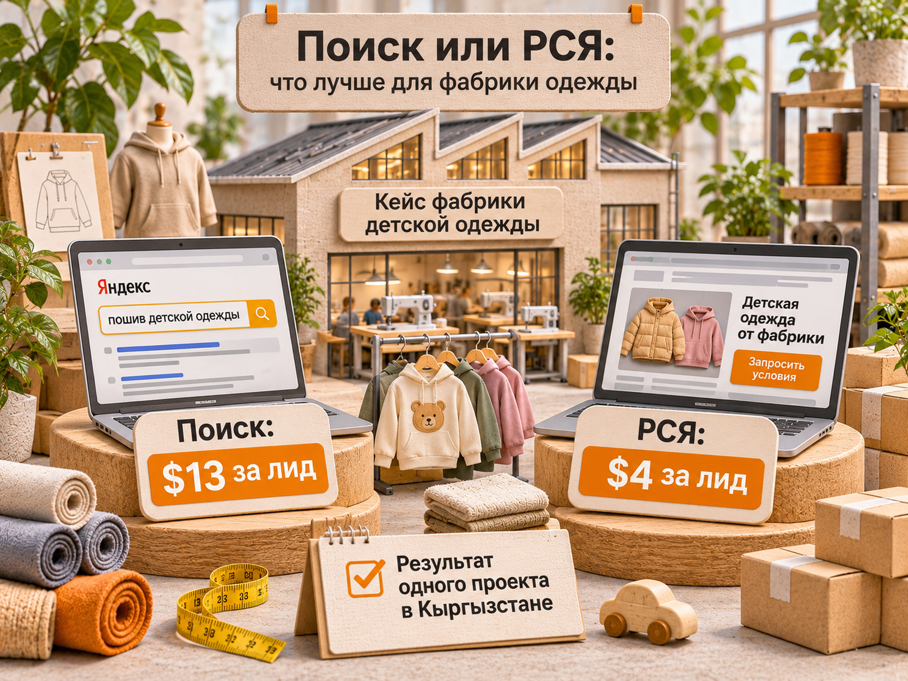

Блог о платном трафике
Реклама производства одежды: как привлекать B2B-заказы на пошив и опт
Чтобы получать заказы на производство одежды, сначала нужно разделить два направления: пошив партий для чужих брендов и продажу готовой продукции оптом. У них разные покупатели, поисковые запросы и условия сделки. Поэтому и реклама должна вести на разные предложения.
В Яндекс Директе я встречал обе ситуации: для компании, организующей пошив под ключ, лучше работал Поиск, а у фабрики детской одежды основной поток недорогих обращений пришёл из РСЯ. Ни один канал нельзя заранее объявить лучшим для всех производителей. Начать стоит с того, что именно фабрика продаёт и кому.
Как разделить рекламу пошива и готовой одежды
Одна фабрика может шить коллекции по лекалам заказчика, разрабатывать изделия с нуля, производить корпоративный мерч и одновременно продавать собственный ассортимент со склада. Для рекламы это не одна услуга.
| Направление | Что ищет покупатель | Что показать на посадочной странице |
|---|---|---|
| Контрактный пошив | Подрядчика, который изготовит партию под брендом заказчика | Специализация, минимальный тираж, работа с лекалами, образцы, порядок расчёта |
| Разработка коллекции и пошив | Производство полного цикла, включая подготовку изделия | Этапы разработки, образец, ткани, согласование, производственные возможности |
| Готовая одежда оптом | Ассортимент для магазина или перепродажи | Каталог, доступные размеры, остатки, минимальный заказ, условия отгрузки |
| Корпоративная одежда и мерч | Партию изделий под конкретную задачу компании | Виды изделий, нанесение символики, тиражи, сроки и процедура согласования |
Запрос «пошив худи для бренда» связан с изготовлением новой партии, а «детские худи оптом от производителя» может означать покупку уже готового товара. Если оба объявления ведут на общую страницу фабрики, человеку придётся самому искать нужные условия.
В моём кейсе фабрики детской одежды под пошив на заказ и продажу готовой одежды сделали отдельные лендинги. Это позволило показывать каждому покупателю своё предложение и отдельно оценивать стоимость обращений.
Кто заказывает производство одежды
За одинаковым на первый взгляд запросом могут стоять разные бизнес-задачи. Продавцу маркетплейса нужна партия с предсказуемой себестоимостью, бренду одежды может потребоваться проработка образца, а оптовый магазин интересуют наличие моделей и условия закупки.
| Покупатель | Что для него существенно | Что уточнить в заявке |
|---|---|---|
| Бренд одежды | Качество образца, лекала, повторяемость партий | Изделие, наличие техзадания, планируемый тираж |
| Селлер маркетплейса | Себестоимость, стабильность поставок, упаковка | Категория товара, объём первой и следующих партий |
| Оптовый магазин | Ассортимент, размеры, складские остатки | Категории товаров, объём закупки, регион доставки |
| Корпоративный заказчик | Соответствие задаче, оформление, согласование образца | Тип одежды, нанесение, количество, требуемая дата |
Это не означает, что под каждого покупателя обязательно нужна новая кампания. Разделять стоит предложения, которые действительно отличаются ассортиментом, условиями и экономикой. Иначе бюджет и статистика разойдутся по слишком большому числу направлений.
Как собрать запросы для Яндекс Директа
Семантику лучше начинать с того, что фабрика реально способна произвести или отгрузить. Запросы для пошива и для оптового склада нужно собирать отдельно. Ниже примеры формулировок, а не подтверждённый список запросов с известной частотностью.
Контрактный пошив для брендов
Для поиска подрядчика подойдут запросы «контрактный пошив одежды», «пошив одежды для бренда», «пошив худи оптом», «швейное производство на заказ», «производство одежды под своим брендом». Более общие фразы вроде «швейная фабрика» потребуют особенно внимательной проверки поисковых запросов.
Текст объявления должен сразу показывать тип производства. Например:
Заголовок: «Пошив одежды для брендов».
Текст: «Партии по вашим лекалам или с разработкой образца. Условия и расчёт заказа на сайте».
Использовать обещание разработки образца можно только тогда, когда фабрика действительно оказывает такую услугу.
Готовая одежда оптом
Для склада нужны другие формулировки: «детская одежда оптом от производителя», «худи оптом от фабрики», «трикотаж оптом производитель», «готовая одежда оптом для магазинов».
Заголовок: «Детская одежда оптом от фабрики».
Текст: «Готовые модели и размеры. Посмотрите ассортимент и запросите условия оптовой закупки».
Здесь человек ждёт каталог или прайс, а не предложение разработать собственную коллекцию.
Нецелевые запросы и автотаргетинг
Для обоих направлений опасны переходы по ремонту одежды, вакансиям швей, курсам кройки, выкройкам, швейному оборудованию и единичному пошиву. Но минус-слова нельзя составить один раз и забыть. После запуска я проверяю фактические запросы и исключаю то, что не соответствует услугам заказчика.
Отдельно нужно учитывать автотаргетинг. В поисковых кампаниях Яндекс Директа его нельзя полностью отключить, но можно ограничивать категории запросов и использовать минус-фразы. На этапе настройки следует смотреть примеры запросов по выбранным категориям, а затем проверять их реальную статистику. В нише с дорогими B2B-обращениями широкие категории требуют особого контроля.
Подробнее о механике исключений: минус-фразы в Яндекс Директе.
Поиск или РСЯ: что выбрать для фабрики одежды
Поиск обращается к сформированному спросу. Человек уже ищет производство, сравнивает подрядчиков или хочет купить готовую одежду оптом. РСЯ показывает рекламу за пределами поисковой выдачи и может привести предпринимателя, который рассматривает запуск коллекции, но сегодня не вводил запрос о фабрике.
| Критерий | Поиск | РСЯ |
|---|---|---|
| Состояние спроса | Человек прямо ищет услугу или товар | Интерес к теме может быть не выражен текущим запросом |
| Основной инструмент | Точные группы запросов, релевантные объявления и страницы | Понятное предложение, изображения продукции, аудитории и ретаргетинг |
| Главный риск | Общие запросы смешиваются с розницей и неподходящими услугами | Можно получить дешёвые, но слабые по качеству обращения |
| Когда проверять | Если есть коммерческий спрос и понятный продукт | Если нужно расширять охват или спроса на Поиске недостаточно |
Показательный пример из моей практики: в проекте фабрики детской одежды в Кыргызстане РСЯ приносила обращения примерно по $4 за лид, а Поиск по направлению пошива давал около $13 за лид. При этом в том же проекте поисковая реклама готовой одежды со склада стоила примерно $45 за заявку. Результаты относятся к периоду 12 декабря 2024 года - 12 марта 2025 года, а не к рыночным ценам 2026 года.

Низкая цена обращения ещё не означает низкую цену клиента. Важно знать, подходит ли заявитель по размеру заказа, дошёл ли до расчёта и разместил ли партию. Поэтому я бы не переносил распределение бюджета из одного кейса в другой без проверки качества заявок.
Как разделять рекламные кампании
Удобнее разделять рекламу там, где нужны разные страницы, предложения и критерии успеха. Например, пошив коллекций под чужим брендом и реализация готового ассортимента имеют разную маржинальность и могут позволять себе разную стоимость привлечения.
Если бюджет небольшой, необязательно создавать отдельную кампанию под каждый вид одежды. Для начала можно объединить близкие изделия в несколько групп с понятными объявлениями, сохранив раздельный учёт действительно разных направлений. Поиск и РСЯ при необходимости удобно оценивать отдельно, чтобы не терять различия в источниках трафика.
Автоматическую стратегию также стоит выбирать с учётом количества конверсий. Когда квалифицированных B2B-заявок всего несколько в неделю, разделение трафика на множество самостоятельных кампаний и целей может оставить каждую из них почти без данных. Оплату за конверсии не следует включать автоматически только потому, что она доступна в интерфейсе.
Что показывать на сайте фабрики
На посадочной странице заказчик должен быстро проверить три вещи: производит ли фабрика нужный товар, берёт ли заказ такого объёма и что нужно предоставить для расчёта. Формулировка «качественная одежда по выгодным ценам» ни на один из этих вопросов не отвечает.
Страница пошива под заказ
В начале страницы нужны специализация и условия производства: виды изделий, минимальная партия, работа с лекалами или разработкой образца. Ниже полезны фотографии цеха и реальных изделий, примеры тканей, процесс согласования образца, контроль качества, география работы и порядок получения коммерческого предложения.
Форма заявки не должна требовать полноценное техническое задание, если клиент ещё не готов его составить. Для первого расчёта обычно достаточно категории изделия, тиража, наличия лекал или образца и контакта. Остальные параметры менеджер уточнит после обращения.
В кейсе фабрики детской одежды на лендинге пошива была указана реальная минимальная партия от 150 единиц. Это конкретное условие того проекта; у другой фабрики порог может быть иным.
Страница готовой продукции оптом
Здесь важнее доступные модели, размеры, цвета, остатки, минимальная сумма или объём закупки, доставка и способ запросить прайс. Если товар уже находится на складе, покупателю не нужно объяснение производственного цикла вместо каталога.
Для SEO можно развивать отдельные страницы по востребованным категориям одежды и условиям производства. При этом разделы должны отличаться реальным ассортиментом или услугой, а не только перестановкой ключевых слов. Подробную тему привлечения заявок именно на загрузку швейного цеха раскрывает статья о рекламе швейного производства.
Как отсеивать нецелевые заявки
Одна из дорогих ошибок в B2B-рекламе одежды: фабрика принимает крупные партии, а с рекламы приходят люди с заказами на пять или двадцать изделий. В Метрике они становятся конверсиями, но для производства не представляют интереса.
Часть таких обращений можно отсечь ещё в объявлении: указать «контрактный пошив», «для брендов», специализацию и минимальную партию, если она установлена. На сайте условия лучше повторить рядом с формой. Человек должен увидеть их до отправки заявки.
Условный пример для иллюстрации. Представим фабрику, которая шьёт футболки, худи и спецодежду партиями от 100 единиц, а заявленный ею срок производства начинается от 10 дней. Обращение на 20 футболок не соответствует минимальному тиражу. Заявку на 300 изделий уже можно передать менеджеру для расчёта, но это ещё не гарантированный заказ: остаётся проверить модель, материалы, загрузку цеха и сроки.
Эти числа придуманы исключительно для примера фильтрации и не описывают условия моих клиентов.
Для оценки качества полезно закрепить в CRM причины отказа: малая партия, неподходящая категория, несогласованные сроки, отсутствие бюджета, недоступный регион. Тогда можно понять, из каких рекламных направлений приходят неподходящие обращения, и изменить объявления или посадочную страницу.
Сколько стоит реклама производства одежды: два реальных кейса
Цена заявки зависит от географии, вида изделия, минимальной партии, конкуренции, сайта и канала. Вот фактические результаты двух разных проектов, которыми я занимался. Сравнивать их напрямую как один рынок некорректно: различались и страны, и периоды, и сами услуги.
| Проект и период | Что рекламировали | Расход и обращения | Что показали каналы |
|---|---|---|---|
| Организация швейного производства, Москва и область, 14.03‑13.04.2023 | Организация пошива одежды под ключ | 91 168 ₽, 39 заявок, средняя стоимость по аккаунту около 2337 ₽ | Поиск: 29 заявок по 1970 ₽ в этот месяц; на отдельных отрезках и по фразам результат был дешевле |
| Фабрика детской одежды, Кыргызстан, 12.12.2024‑12.03.2025 | Контрактный пошив и готовая одежда оптом | $1032,40, 173 заявки за три месяца | РСЯ: около $4 за лид; Поиск по пошиву: около $13; Поиск готовой продукции: около $45 |
В первом проекте при ограниченном бюджете основной упор сделали на Поиск. По итогам приведённого месяца он обеспечил большую часть обращений. Во втором проекте основным источником недорогих заявок стали РСЯ и другие кампании с автоматическим подбором аудитории, а две модели продаж были разведены по посадочным страницам.
Я не стал бы использовать эти цены как готовый медиаплан на ноябрь 2026 года. Они подтверждают рабочие подходы, но актуальную стоимость перехода и заявки нужно проверять для конкретного региона и предложения.
Как рассчитать бюджет и стоимость целевого лида
Первый расчёт можно построить от количества подходящих заявок. Достаточно знать предполагаемую цену обычного обращения и долю заявок, соответствующих условиям фабрики.
Пример с допущениями, не статистика рынка: рекламный бюджет 60 000 ₽, получено 30 обращений, из них 12 соответствуют требованиям производства.
| Показатель | Расчёт | Результат |
|---|---|---|
| Стоимость любой заявки | 60 000 ₽ / 30 | 2000 ₽ |
| Доля целевых обращений | 12 / 30 × 100% | 40% |
| Стоимость квалифицированной заявки | 60 000 ₽ / 12 | 5000 ₽ |
Если ориентироваться только на CPL 2000 ₽, реклама выглядит в два с половиной раза дешевле, чем по фактической стоимости подходящего обращения. Поэтому после первых заявок бюджет нужно корректировать с учётом их качества.
Можно посчитать и требуемый бюджет в обратную сторону:
Бюджет = нужное число квалифицированных заявок × допустимая стоимость квалифицированной заявки.
Предположим, фабрике требуется 12 квалифицированных обращений, а допустимая стоимость одного составляет 5000 ₽. Получается 60 000 ₽ на рекламные клики. Это расчётный сценарий, не прогноз гарантированного результата. К нему отдельно учитываются расходы на создание и ведение рекламы, сайт и обработку лидов.
Допустимую цену заявки нужно выводить из экономики сделки: маржи после переменных производственных расходов, вероятности заключения договора, стоимости обработки заказа и возможности повторных партий. Большой тираж с низкой маржей не обязательно выгоднее небольшого заказа с высокой доходностью.
Для сценарного расчёта Поиска и РСЯ по отдельности на сайте есть калькулятор бюджета Яндекс Директа. Цены кликов в него стоит подставлять из актуального прогноза Поиска и собственной статистики, а не из старых кейсов.
Как связать рекламу с реальными заказами
В рекламном кабинете видно отправленную форму. Но менеджер может выяснить, что тираж слишком мал, заказчик ищет не ту технологию или переговоры закончились без договора. Если эти сведения не доходят до специалиста по рекламе, оптимизация идёт по неполной картине.
Для производственного B2B я бы фиксировал как минимум факт обращения, соответствие минимальным условиям, отправку расчёта, заключение договора и сумму заказа. Для повторных заказов полезно сохранять отдельную связь с первым рекламным источником клиента.
При наличии технической интеграции данные из CRM можно передавать в Яндекс Метрику как статусы заказов и офлайн-конверсии. Это позволяет анализировать кампании по подтверждённым результатам. Для использования данных в оптимизации важно, чтобы конверсии корректно сопоставлялись с визитами. Если квалифицированных обращений мало, лучше сначала наладить учёт и оценивать их вручную, чем сразу переключать стратегии на редкую глубокую цель.
Разницу между обычной и подходящей заявкой подробнее разбираю в материале о квалификации лидов.
Что делать после запуска рекламы
- Проверить запросы и объявления. Убрать переходы по рознице, вакансиям и услугам, которые фабрика не оказывает. Отдельно посмотреть фактические запросы автотаргетинга.
- Проверить посадочные страницы. Сравнить, какой процент посетителей по пошиву и по готовой одежде оставляет заявку. Если предложение не соответствует запросу, исправлять страницу, а не только ставки.
- Разобрать первые обращения с менеджером. Отметить подходящие заказы, минимальные партии и причины отказов. Не считать все формы одинаково ценными.
- Сравнить каналы по квалифицированным заявкам. Поиск с дорогим обращением может оказаться выгоднее РСЯ, если заказчики чаще размещают партии. Бывает и наоборот.
- Проверить загрузку производства. Если цех не успевает рассчитывать или выполнять заказы, увеличение рекламного бюджета создаст очередь, а не дополнительную прибыль. В таком случае логичнее ограничить объём, сосредоточиться на приоритетных изделиях или более маржинальных заказах.
Наиболее полезное решение здесь принимает не один рекламный кабинет. Оно появляется, когда данные о кликах и обращениях сопоставлены с реальными условиями пошива, расчётами и заключёнными договорами.